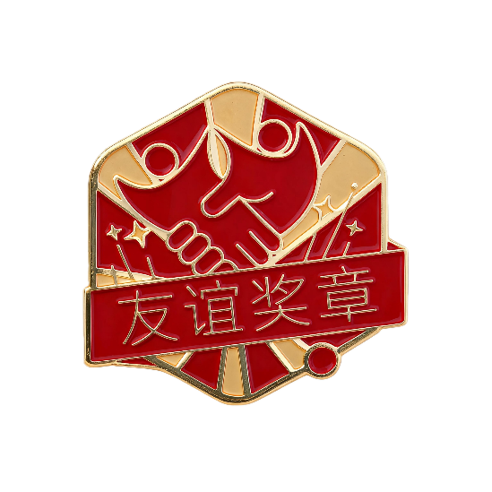

每人每天5票，选出你心中最会「和用户交朋友」的人，点亮他/她的故事
每一次点赞都是对他人努力的认可，让光芒被更多人看见。
下载投稿模版，写下你的故事，发送给小王即可参与
"和用户交朋友"本质上是指导所有小米人工作的价值原点，以平等、尊重的态度面对每一个内/外部用户，倾听真实声音，洞察真实需求，解决实际问题，不欺骗，不盲从，追求长期发展，与用户共同成长。
我们致力于挖掘践行"和用户交朋友"的价值观标杆，并对他/她说："谢谢你，朋友"
每一个故事都值得被看见，别让你的努力沉默。支持上传图片和视频。